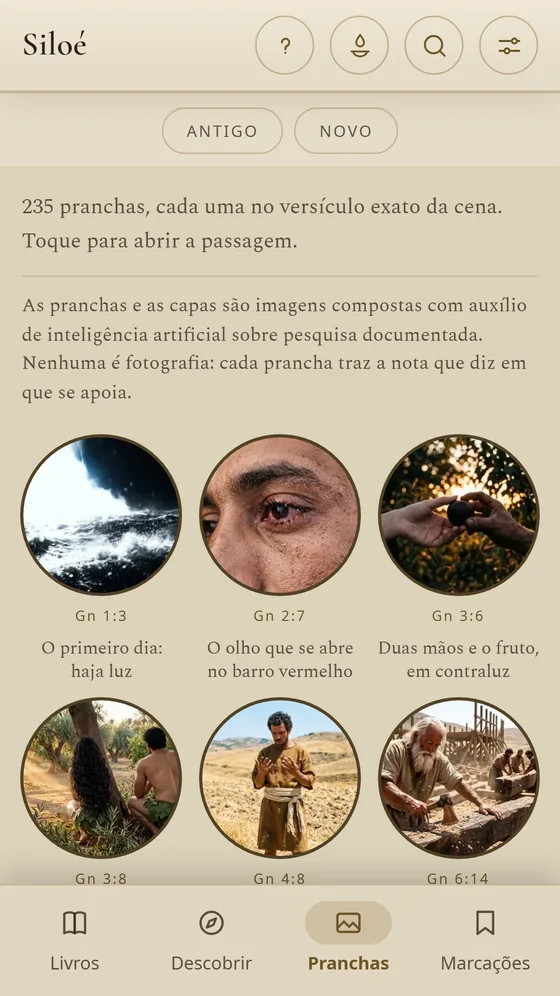

Bíblia Sagrada Ilustrada
Siloé
A Bíblia completa em português, ilustrada com 235 pranchas — cada uma no versículo da cena —, com estudo capítulo a capítulo e o hebraico e o grego palavra a palavra.
Grátis para ler · edições extra em compra única
